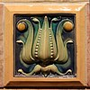

tile

Definition: Tiles are usually thin, square or rectangular coverings manufactured from hard-wearing material such as ceramic, stone, metal, baked clay, or even glass. They are generally fixed in place in an array to cover roofs, floors, walls, edges, or other objects such as tabletops. Alternatively, tile can sometimes refer to similar units made from lightweight materials such as perlite, wood, and mineral wool, typically used for wall and ceiling applications. In another sense, a tile is a construction tile or similar object, such as rectangular counters used in playing games (see tile-based game). The word is derived from the French word tuile, which is, in turn, from the Latin word tegula, meaning a roof tile composed of fired clay.
Source: Wikipedia
Wikipedia Page (Something wrong with this association? Let us know.)
Wikidata Page (Something wrong with this association? Let us know.)
Occurs in: